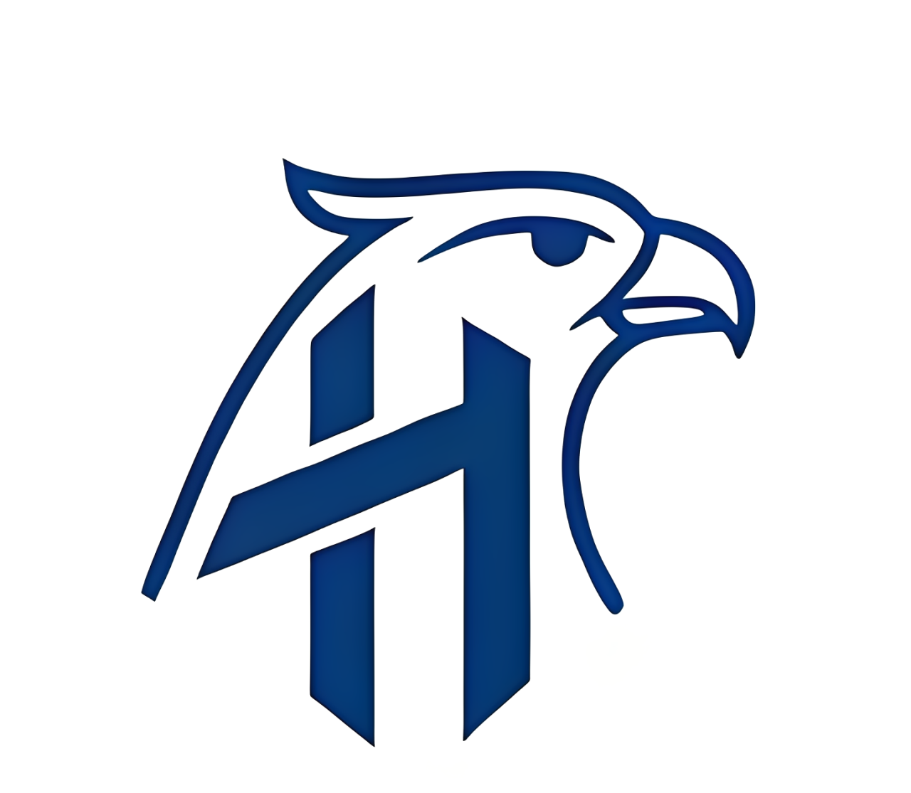

Objetivo acadêmico
Estruturar uma base de desenvolvimento coerente com o tema do TCC e com as etapas de construção da solução.
O projeto Hórus apresenta uma proposta voltada ao diagnóstico assistido de retinopatia diabética por meio da aplicação de técnicas de deep learning.
Esta página reúne, de forma objetiva, os principais eixos da proposta e a estrutura inicial de CI/CD utilizada para organizar a evolução e a publicação do projeto.
A proposta busca apoiar a identificação de sinais relacionados à retinopatia diabética com o uso de recursos computacionais aplicados à análise de imagens, dentro de um contexto acadêmico e de pesquisa.
Estruturar uma base de desenvolvimento coerente com o tema do TCC e com as etapas de construção da solução.
Explorar o uso de deep learning como apoio ao diagnóstico assistido, considerando organização, consistência e evolução do projeto.
Manter uma página principal atualizada, clara e adequada para demonstração no GitHub Pages.
O desenvolvimento do projeto está associado à aplicação de inteligência artificial na área da saúde, com foco em visão computacional, análise de imagens e apoio à tomada de decisão em contextos clínicos.

A landing page principal foi simplificada para destacar o conteúdo essencial do projeto com uma estrutura estática mais leve, preservando a linha visual e os tópicos centrais anteriormente organizados na versão em React.
O repositório adota um fluxo simples para acompanhar a evolução da página principal e garantir uma publicação organizada no GitHub Pages.
As alterações são realizadas inicialmente na branch de desenvolvimento.
O workflow de CI verifica se os arquivos principais da página continuam íntegros.
Depois da conferência, as mudanças seguem para revisão e integração na branch principal.
Após o merge em `master`, o workflow de CD publica automaticamente a versão atualizada.